# Load a library
# Install packages
#install.packages("tidyverse")
#install.packages("ggpubr")
#install.packages("corrplot")
#install.packages("psych")
#install.packages("GGally")
#| message: false
#| warning: false
# Load packages
library(tidyverse)
library(ggpubr)
library(corrplot)
library(psych)
library(GGally)
library(ggplot2)Final Report: Diabetes: Association Between Glycemic Control, Lipid Profile, and Kidney Function Across Diabetes Classifications
1 Final Report: Diabetes: Association Between Glycemic Control, Lipid Profile, and Kidney Function Across Diabetes Classifications
1.1 Introduction
Diabetes mellitus is a chronic metabolic disorder characterized by persistent hyperglycemia that can lead to both macrovascular and microvascular complications. Glycated hemoglobin (HbA1c) is the standard clinical marker used to assess long-term glycemic control and is associated with the risk of diabetes-related complications. Poor glycemic control has been linked to abnormalities in lipid metabolism, including elevated cholesterol, triglycerides, and low-density lipoprotein (LDL), as well as reduced high-density lipoprotein (HDL). These metabolic disturbances contribute to cardiovascular disease, the leading cause of morbidity among individuals with diabetes.
Diabetes also affects kidney function, with elevated serum urea and creatinine serving as indicators of renal impairment. Understanding how glycemic control relates to lipid abnormalities and kidney function across different diabetes classifications may help identify patients at greater risk of complications.
This study investigates the association between HbA1c, lipid profile, and kidney function across diabetes classifications.
1.1.1 Research Question
How are HbA1c levels associated with lipid profile and kidney function across different diabetes classifications?
1.1.2 Hypothesis
Individuals with poorer glycemic control (higher HbA1c) will have a more adverse lipid profile and poorer kidney function, and these relationships will differ among diabetes classifications.
1.2 Methods
1.2.1 Data Source
The dataset consists of clinical measurements obtained from individuals representing different diabetes classifications. Variables include glycemic control (HbA1c), lipid profile biomarkers (total cholesterol, triglycerides, HDL, LDL, and VLDL), and kidney function biomarkers (urea and creatinine). These variables were analyzed to investigate the relationship between glycemic control, lipid metabolism, and kidney function.
###Software
All analyses were performed in R using Quarto for reproducible reporting.
Load Required Packages
The following R packages were used for data manipulation, visualization, and statistical analysis.
### Import the Dataset
The diabetes dataset was imported into R and inspected to verify that it was read correctly.
getwd()[1] "C:/Users/shami/Documents/sherifhamidu.github.io/projects"list.files()[1] "Dataset of Diabetes .csv" "final-report.qmd"
[3] "final-report.rmarkdown" Diabetes <- read.csv("Dataset of Diabetes .csv")1.2.2 Data Inspection
The structure of the dataset was explored to understand the available variables, their data types, and the overall dimensions of the dataset.
glimpse(Diabetes)Rows: 1,000
Columns: 14
$ ID <int> 502, 735, 420, 680, 504, 634, 721, 421, 670, 759, 636, 788, …
$ No_Pation <int> 17975, 34221, 47975, 87656, 34223, 34224, 34225, 34227, 3422…
$ Gender <chr> "F", "M", "F", "F", "M", "F", "F", "M", "M", "F", "F", "F", …
$ AGE <int> 50, 26, 50, 50, 33, 45, 50, 48, 43, 32, 31, 33, 30, 45, 50, …
$ Urea <dbl> 4.7, 4.5, 4.7, 4.7, 7.1, 2.3, 2.0, 4.7, 2.6, 3.6, 4.4, 3.3, …
$ Cr <int> 46, 62, 46, 46, 46, 24, 50, 47, 67, 28, 55, 53, 42, 54, 39, …
$ HbA1c <dbl> 4.9, 4.9, 4.9, 4.9, 4.9, 4.0, 4.0, 4.0, 4.0, 4.0, 4.2, 4.0, …
$ Chol <dbl> 4.2, 3.7, 4.2, 4.2, 4.9, 2.9, 3.6, 2.9, 3.8, 3.8, 3.6, 4.0, …
$ TG <dbl> 0.9, 1.4, 0.9, 0.9, 1.0, 1.0, 1.3, 0.8, 0.9, 2.0, 0.7, 1.1, …
$ HDL <dbl> 2.4, 1.1, 2.4, 2.4, 0.8, 1.0, 0.9, 0.9, 2.4, 2.4, 1.7, 0.9, …
$ LDL <dbl> 1.4, 2.1, 1.4, 1.4, 2.0, 1.5, 2.1, 1.6, 3.7, 3.8, 1.6, 2.7, …
$ VLDL <dbl> 0.5, 0.6, 0.5, 0.5, 0.4, 0.4, 0.6, 0.4, 1.0, 1.0, 0.3, 1.0, …
$ BMI <dbl> 24, 23, 24, 24, 21, 21, 24, 24, 21, 24, 23, 21, 22, 23, 24, …
$ CLASS <chr> "N", "N", "N", "N", "N", "N", "N", "N", "N", "N", "N", "N", …head(Diabetes) ID No_Pation Gender AGE Urea Cr HbA1c Chol TG HDL LDL VLDL BMI CLASS
1 502 17975 F 50 4.7 46 4.9 4.2 0.9 2.4 1.4 0.5 24 N
2 735 34221 M 26 4.5 62 4.9 3.7 1.4 1.1 2.1 0.6 23 N
3 420 47975 F 50 4.7 46 4.9 4.2 0.9 2.4 1.4 0.5 24 N
4 680 87656 F 50 4.7 46 4.9 4.2 0.9 2.4 1.4 0.5 24 N
5 504 34223 M 33 7.1 46 4.9 4.9 1.0 0.8 2.0 0.4 21 N
6 634 34224 F 45 2.3 24 4.0 2.9 1.0 1.0 1.5 0.4 21 Nstr(Diabetes)'data.frame': 1000 obs. of 14 variables:
$ ID : int 502 735 420 680 504 634 721 421 670 759 ...
$ No_Pation: int 17975 34221 47975 87656 34223 34224 34225 34227 34229 34230 ...
$ Gender : chr "F" "M" "F" "F" ...
$ AGE : int 50 26 50 50 33 45 50 48 43 32 ...
$ Urea : num 4.7 4.5 4.7 4.7 7.1 2.3 2 4.7 2.6 3.6 ...
$ Cr : int 46 62 46 46 46 24 50 47 67 28 ...
$ HbA1c : num 4.9 4.9 4.9 4.9 4.9 4 4 4 4 4 ...
$ Chol : num 4.2 3.7 4.2 4.2 4.9 2.9 3.6 2.9 3.8 3.8 ...
$ TG : num 0.9 1.4 0.9 0.9 1 1 1.3 0.8 0.9 2 ...
$ HDL : num 2.4 1.1 2.4 2.4 0.8 1 0.9 0.9 2.4 2.4 ...
$ LDL : num 1.4 2.1 1.4 1.4 2 1.5 2.1 1.6 3.7 3.8 ...
$ VLDL : num 0.5 0.6 0.5 0.5 0.4 0.4 0.6 0.4 1 1 ...
$ BMI : num 24 23 24 24 21 21 24 24 21 24 ...
$ CLASS : chr "N" "N" "N" "N" ...summary(Diabetes) ID No_Pation Gender AGE
Min. : 1.0 Min. : 123 Length :1000 Min. :20.00
1st Qu.:125.8 1st Qu.: 24064 N.unique : 3 1st Qu.:51.00
Median :300.5 Median : 34396 N.blank : 0 Median :55.00
Mean :340.5 Mean : 270551 Min.nchar: 1 Mean :53.53
3rd Qu.:550.2 3rd Qu.: 45384 Max.nchar: 1 3rd Qu.:59.00
Max. :800.0 Max. :75435657 Max. :79.00
Urea Cr HbA1c Chol
Min. : 0.500 Min. : 6.00 Min. : 0.900 Min. : 0.000
1st Qu.: 3.700 1st Qu.: 48.00 1st Qu.: 6.500 1st Qu.: 4.000
Median : 4.600 Median : 60.00 Median : 8.000 Median : 4.800
Mean : 5.125 Mean : 68.94 Mean : 8.281 Mean : 4.863
3rd Qu.: 5.700 3rd Qu.: 73.00 3rd Qu.:10.200 3rd Qu.: 5.600
Max. :38.900 Max. :800.00 Max. :16.000 Max. :10.300
TG HDL LDL VLDL
Min. : 0.30 Min. :0.200 Min. :0.30 Min. : 0.100
1st Qu.: 1.50 1st Qu.:0.900 1st Qu.:1.80 1st Qu.: 0.700
Median : 2.00 Median :1.100 Median :2.50 Median : 0.900
Mean : 2.35 Mean :1.205 Mean :2.61 Mean : 1.855
3rd Qu.: 2.90 3rd Qu.:1.300 3rd Qu.:3.30 3rd Qu.: 1.500
Max. :13.80 Max. :9.900 Max. :9.90 Max. :35.000
BMI CLASS
Min. :19.00 Length :1000
1st Qu.:26.00 N.unique : 3
Median :30.00 N.blank : 0
Mean :29.58 Min.nchar: 1
3rd Qu.:33.00 Max.nchar: 1
Max. :47.75 dim(Diabetes)[1] 1000 141.2.3 Missing Value Assessment
Before performing statistical analyses, the dataset was examined for missing values.
colSums(is.na(Diabetes)) ID No_Pation Gender AGE Urea Cr HbA1c Chol
0 0 0 0 0 0 0 0
TG HDL LDL VLDL BMI CLASS
0 0 0 0 0 0 A dataset with minimal or no missing values improves the reliability of statistical analyses and visualizations.
1.2.4 Variables Included in this Study
1.3 Study Variables
The analysis focused on biomarkers representing three major biological domains:
| Biological Domain | Variables |
|---|---|
| Glycemic Control | HbA1c |
| Lipid Metabolism | Chol, TG, HDL, LDL, VLDL |
| Kidney Function | Urea, Cr |
1.3.1 Data Preparation
To simplify subsequent analyses, only the variables relevant to the research question were retained.
Diabetes_selected <-
Diabetes %>%
select(
CLASS,
HbA1c,
Chol,
TG,
HDL,
LDL,
VLDL,
Urea,
Cr
)
head(Diabetes_selected) CLASS HbA1c Chol TG HDL LDL VLDL Urea Cr
1 N 4.9 4.2 0.9 2.4 1.4 0.5 4.7 46
2 N 4.9 3.7 1.4 1.1 2.1 0.6 4.5 62
3 N 4.9 4.2 0.9 2.4 1.4 0.5 4.7 46
4 N 4.9 4.2 0.9 2.4 1.4 0.5 4.7 46
5 N 4.9 4.9 1.0 0.8 2.0 0.4 7.1 46
6 N 4.0 2.9 1.0 1.0 1.5 0.4 2.3 24### Data Normalization
###Because the biomarkers are measured on different clinical scales, a normalized dataset was created using Z-score standardization. This preprocessing step allows variables to be compared on the same scale while preserving the original dataset for statistical analyses.
Diabetes_normalized <-
Diabetes_selected %>%
mutate(
across(
HbA1c:Cr,
scale
)
)
head(Diabetes_normalized) CLASS HbA1c Chol TG HDL LDL VLDL
1 N -1.334316 -0.50918099 -1.0345667 1.8098508 -1.0849145 -0.3697730
2 N -1.334316 -0.89328300 -0.6777236 -0.1586127 -0.4571690 -0.3424774
3 N -1.334316 -0.50918099 -1.0345667 1.8098508 -1.0849145 -0.3697730
4 N -1.334316 -0.50918099 -1.0345667 1.8098508 -1.0849145 -0.3697730
5 N -1.334316 0.02856183 -0.9631980 -0.6128735 -0.5468470 -0.3970685
6 N -1.689485 -1.50784622 -0.9631980 -0.3100330 -0.9952365 -0.3970685
Urea Cr
1 -0.1447084 -0.3824806
2 -0.2128476 -0.1157461
3 -0.1447084 -0.3824806
4 -0.1447084 -0.3824806
5 0.6729627 -0.3824806
6 -0.9623795 -0.7492405The normalized dataset was created to facilitate comparison across biomarkers. However, all descriptive statistics, visualizations, and statistical analyses presented in this report were performed using the original clinical measurements to preserve clinical interpretability.
1.4 Results
This section presents the findings of the analyses performed to investigate the relationship between glycemic control (HbA1c), lipid profile, and kidney function across diabetes classifications. The results are organized according to the study’s research questions.
---
## Descriptive Statistics
#Before conducting statistical analyses, summary statistics were calculated to describe the distribution of HbA1c, lipid profile markers, and kidney function markers included in this study.
# Descriptive statistics for continuous variables
psych::describe(
Diabetes_selected[, c("HbA1c", "Chol", "TG", "HDL", "LDL", "VLDL", "Urea", "Cr")]
) vars n mean sd median trimmed mad min max
HbA1c -1 -1000 -8.281160 -2.5340031 -8.0 -8.215575 -2.66868 -0.9 -16.0
Chol -2 -1000 -4.862820 -1.3017375 -4.8 -4.799900 -1.18608 0.0 -10.3
TG -3 -1000 -2.349610 -1.4011760 -2.0 -2.152763 -1.03782 -0.3 -13.8
HDL -4 -1000 -1.204750 -0.6604136 -1.1 -1.115713 -0.29652 -0.2 -9.9
LDL -5 -1000 -2.609790 -1.1151017 -2.5 -2.544675 -1.11195 -0.3 -9.9
VLDL -6 -1000 -1.854700 -3.6635993 -0.9 -1.055000 -0.44478 -0.1 -35.0
Urea -7 -1000 -5.124743 -2.9351654 -4.6 -4.690679 -1.48260 -0.5 -38.9
Cr -8 -1000 -68.943000 -59.9847474 -60.0 -60.866250 -17.79120 -6.0 -800.0
range skew kurtosis se
HbA1c -15.1 -0.2210248 0.2610967 -0.08013221
Chol -10.3 -0.6152725 -1.8989297 -0.04116455
TG -13.5 -2.2915653 -10.1800201 -0.04430908
HDL -9.7 -6.2643642 -62.1806839 -0.02088411
LDL -9.6 -1.1424742 -4.2339275 -0.03526261
VLDL -34.9 -5.3344040 -33.2655134 -0.11585318
Urea -38.4 -4.2860397 -30.2032163 -0.09281808
Cr -794.0 -8.4487457 -91.0625474 -1.89688427These descriptive statistics demonstrate the variation present among glycemic, lipid, and renal biomarkers. Because these variables are measured using different clinical units, normalization was performed separately to allow comparison across biomarkers.
2 Research Question 1
2.1 Does glycemic control (HbA1c) differ across diabetes classifications?
To answer this question, the distribution of HbA1c was first examined using a histogram. HbA1c values were then compared among diabetes classifications using boxplots. Finally, a one-way Analysis of Variance (ANOVA) was performed to determine whether the observed differences were statistically significant.
2.1.1 Distribution of HbA1c
The histogram below illustrates the overall distribution of HbA1c values within the study population. Examining the distribution helps determine whether HbA1c is approximately normally distributed or exhibits skewness.
ggplot(Diabetes_selected,
aes(x = HbA1c)) +
geom_histogram(
aes(y = after_stat(density)),
bins = 20,
fill = "steelblue",
color = "black",
alpha = 0.8
) +
geom_density(
color = "red",
linewidth = 1.2
) +
theme_minimal(base_size = 14) +
labs(
title = "Distribution of HbA1c",
x = "HbA1c (%)",
y = "Density"
)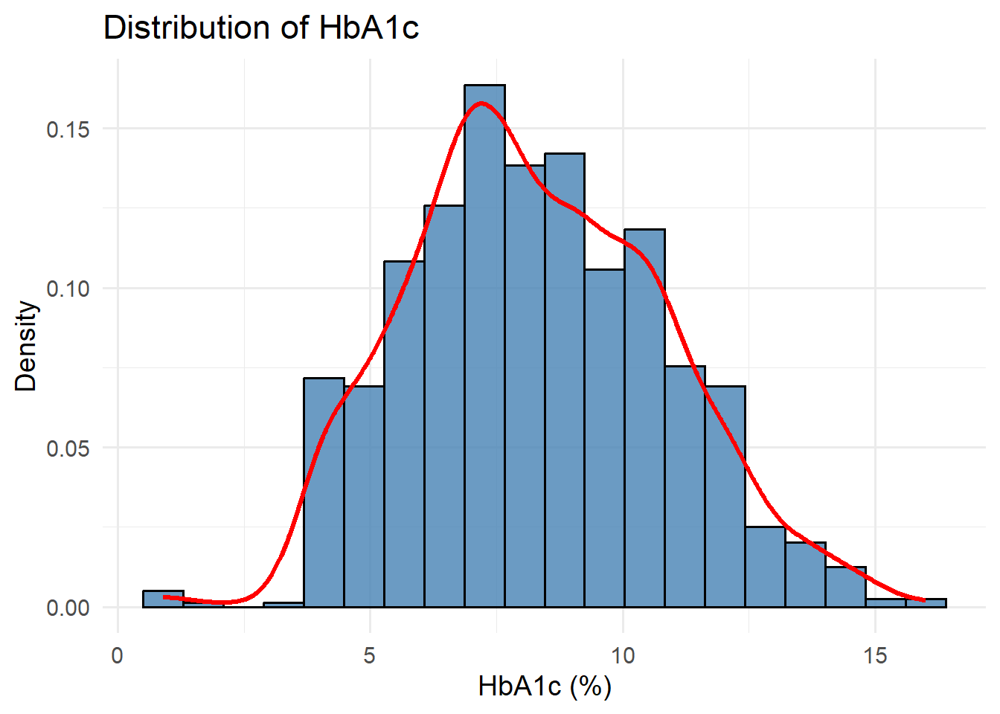
Interpretation
The histogram demonstrates the distribution of HbA1c values across all participants. HbA1c values span a broad range, indicating substantial variability in glycemic control within the study population. The distribution suggests the presence of individuals with both normal glucose regulation and poor glycemic control, supporting further investigation of metabolic differences associated with HbA1c levels.
2.1.2 HbA1c Across Diabetes Classifications
To compare glycemic control among diabetes classifications, HbA1c values were visualized using boxplots.
diabetes <- Diabetes %>%
mutate(
CLASS = factor(
CLASS,
levels = c("N", "P", "Y"),
labels = c("Non-diabetic", "Prediabetic", "Diabetic")
)
)
hbA1c_box_jitter <- ggplot(diabetes, aes(x = CLASS, y = HbA1c, fill = CLASS)) +
geom_boxplot(width = 0.6, outlier.shape = NA) +
stat_summary(
fun = mean,
geom = "point",
shape = 23,
size = 3,
fill = "white",
color = "black"
) +
geom_jitter(
aes(color = CLASS),
width = 0.15, # small horizontal spread
alpha = 0.25, # low opacity → less visual density
size = 1 # small point size
) +
scale_fill_brewer(palette = "Set2") +
scale_color_brewer(palette = "Set2", guide = "none") +
labs(
title = "HbA1c across diabetes classifications",
x = "Diabetes classification",
y = "HbA1c (%)"
) +
theme_minimal(base_size = 12) +
theme(
legend.position = "none",
plot.title = element_text(hjust = 0.5, face = "bold"),
axis.title.x = element_text(face = "bold"),
axis.title.y = element_text(face = "bold")
)
hbA1c_box_jitter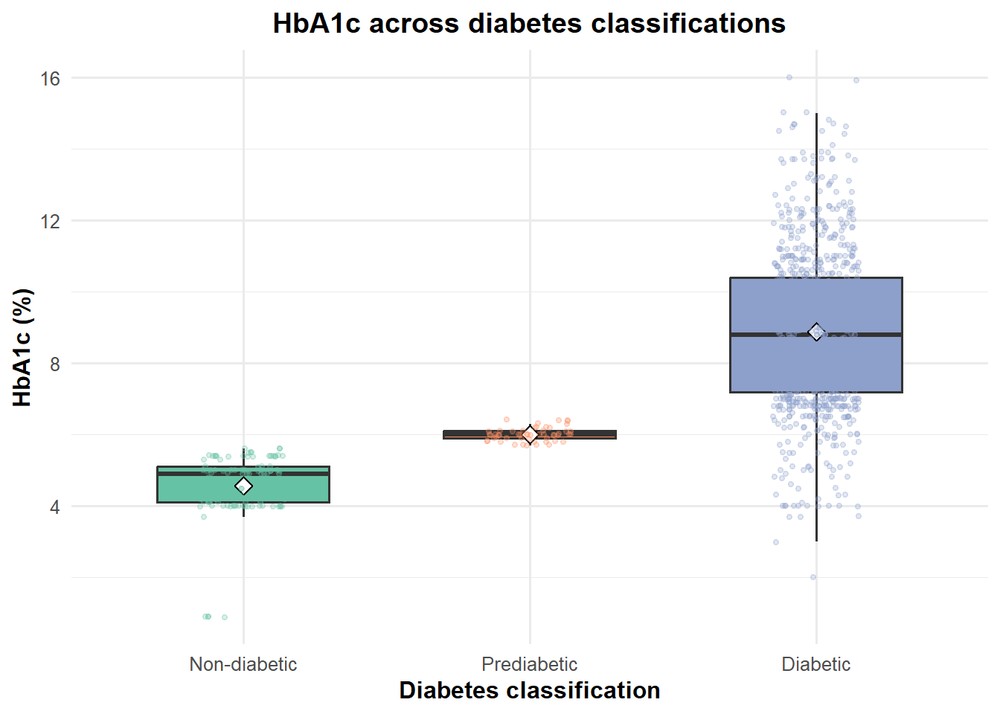
Interpretation
HbA1c differed significantly among diabetes classifications. Individuals classified as diabetic exhibited substantially higher HbA1c levels than prediabetic and non-diabetic participants. The highly significant ANOVA result (p < 0.001) confirms that glycemic control varies across diabetes classifications and supports the use of HbA1c as a distinguishing clinical marker.
2.1.3 Statistical Comparison of HbA1c Across Diabetes Classifications
A one-way Analysis of Variance (ANOVA) was performed to determine whether the mean HbA1c differed significantly among diabetes classifications.
anova <- aov(
HbA1c ~ CLASS,
data = Diabetes
)
summary(anova) Df Sum Sq Mean Sq F value Pr(>F)
CLASS 2 2002 1000.9 226.1 <2e-16 ***
Residuals 997 4413 4.4
---
Signif. codes: 0 '***' 0.001 '**' 0.01 '*' 0.05 '.' 0.1 ' ' 1Interpretation
HbA1c differed significantly across non-diabetic, prediabetic, and diabetic groups, confirming that the clinical classification reflects progressively worse glycemic control.
2.2 Research Question 2
Is HbA1c associated with lipid profile?
2.2.1 Correlation Between HbA1c and Lipid Biomarkers
A correlation matrix was generated to evaluate the strength and direction of relationships between HbA1c, lipid markers, and kidney function biomarkers.
# Select variables for correlation analysis
library(corrplot)
corrdata <- Diabetes %>%
select(HbA1c, Chol, TG, HDL, LDL, VLDL, Urea, Cr)
# Calculate correlation matrix
cormatrix <- cor(corrdata, use = "complete.obs")
# Visualize correlations
corrplot(
cormatrix,
method = "color",
type = "upper",
addCoef.col = "black",
number.cex = 0.7,
tl.col = "black",
tl.srt = 45,
tl.cex = 0.9,
col = colorRampPalette(c("steelblue4", "white", "tomato3"))(200),
diag = FALSE
)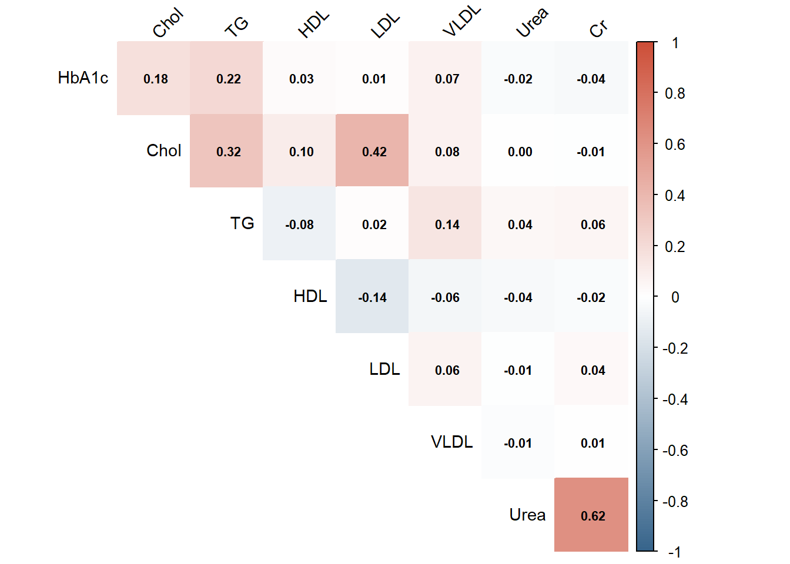
Figure 3. Correlation matrix showing relationships between glycemic control, lipid profile, and kidney function biomarkers.
This figure confirms that the strongest visual separation among diabetes classes occurs along the HbA1c–triglyceride axis.
2.2.2 Relationship Between HbA1c and Individual Lipid Markers
To further examine specific relationships identified in the correlation analysis, scatterplots were generated between HbA1c and each lipid biomarker. Linear regression lines were added to visualize the direction of association.
### Class Label
library(dplyr)
library(forcats)
Diabetes <- Diabetes %>%
mutate(
Class_Label = recode_factor(
CLASS,
N = "Non-diabetic",
P = "Prediabetic",
Y = "Diabetic"
)
)2.3 HbA1c and Total Cholesterol
chol_plot <- ggplot(Diabetes, aes(x = HbA1c, y = Chol, color = Class_Label)) +
geom_point(alpha = 0.30, size = 1.5) +
geom_smooth(method = "lm", se = TRUE, linewidth = 1) +
scale_color_brewer(palette = "Set2") +
theme_minimal(base_size = 12) +
labs(
title = "HbA1c vs Total Cholesterol",
x = "HbA1c (%)",
y = "Total chol",
color = "Diabetes class"
)
chol_plot`geom_smooth()` using formula = 'y ~ x'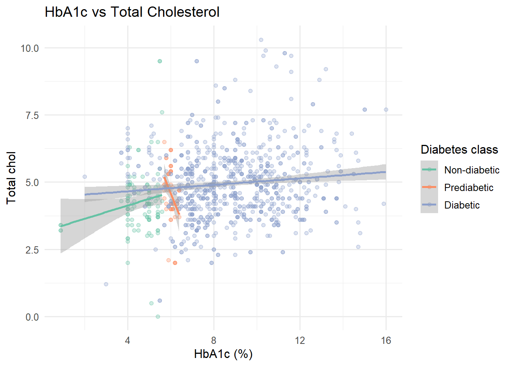
2.4 HbA1c and Triglycerides
tg_plot <- ggplot(Diabetes, aes(x = HbA1c, y = TG, color = Class_Label)) +
geom_point(alpha = 0.30, size = 1.5) +
geom_smooth(method = "lm", se = TRUE, linewidth = 1) +
scale_color_brewer(palette = "Set2") +
theme_minimal(base_size = 12) +
labs(
title = "HbA1c vs Total Triglycerides",
x = "HbA1c (%)",
y = "Total TG",
color = "Diabetes class"
)
tg_plot`geom_smooth()` using formula = 'y ~ x'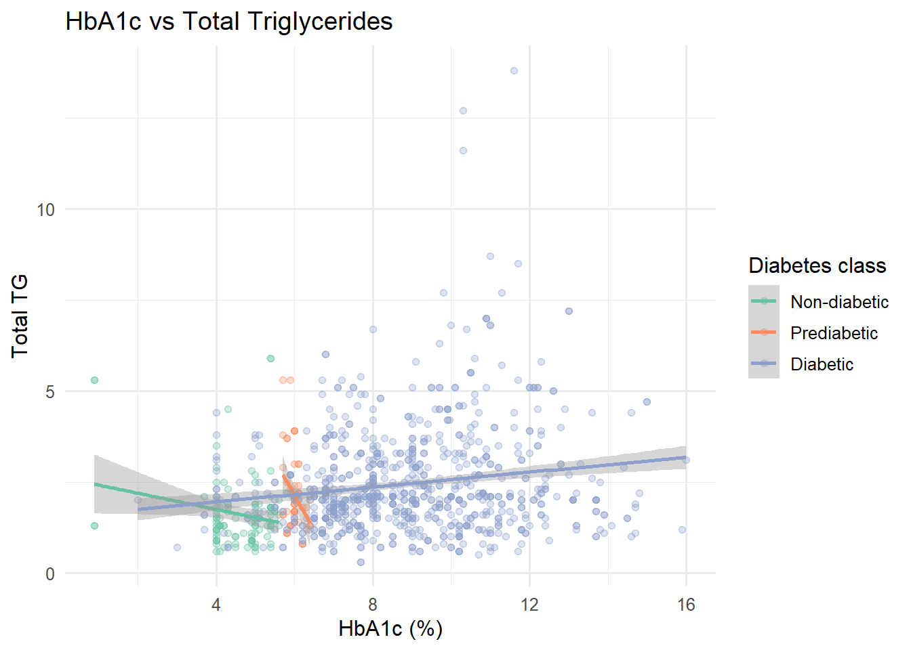
2.5 HbA1c and HDL
hdl_plot <- ggplot(Diabetes, aes(x = HbA1c, y = HDL, color = Class_Label)) +
geom_point(alpha = 0.30, size = 1.5) +
geom_smooth(method = "lm", se = TRUE, linewidth = 1) +
scale_color_brewer(palette = "Set2") +
theme_minimal(base_size = 12) +
labs(
title = "HbA1c vs Total HDL",
x = "HbA1c (%)",
y = "Total HDL",
color = "Diabetes class"
)
hdl_plot`geom_smooth()` using formula = 'y ~ x'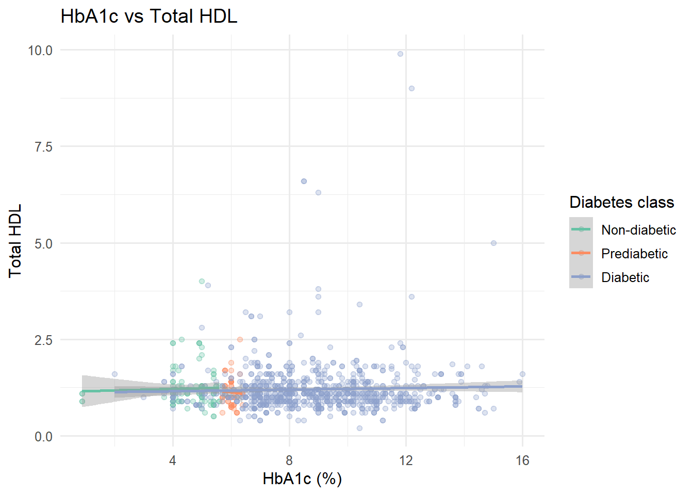
2.6 HbA1c and LDL
ldl_plot <- ggplot(Diabetes, aes(x = HbA1c, y = LDL, color = Class_Label)) +
geom_point(alpha = 0.30, size = 1.5) +
geom_smooth(method = "lm", se = TRUE, linewidth = 1) +
scale_color_brewer(palette = "Set2") +
theme_minimal(base_size = 12) +
labs(
title = "HbA1c vs Total LDL",
x = "HbA1c (%)",
y = "Total LDL",
color = "Diabetes class"
)
ldl_plot`geom_smooth()` using formula = 'y ~ x'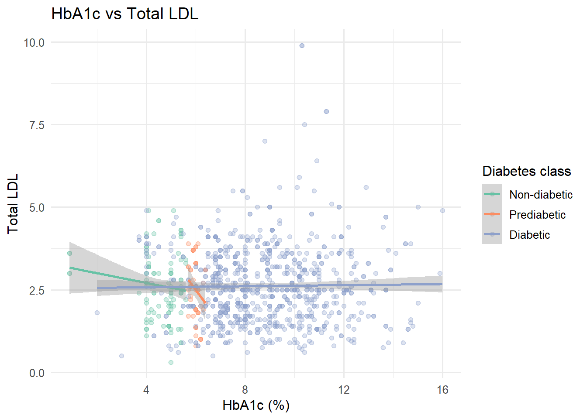
2.7 HbA1c and VLDL
vldl_plot <-ggplot(Diabetes, aes(x = HbA1c, y = VLDL, color = Class_Label)) +
geom_point(alpha = 0.30, size = 1.5) +
geom_smooth(method = "lm", se = TRUE, linewidth = 1) +
scale_color_brewer(palette = "Set2") +
theme_minimal(base_size = 12) +
labs(
title = "HbA1c vs Total VLDL",
x = "HbA1c (%)",
y = "Total VLDL",
color = "Diabetes class"
)
vldl_plot`geom_smooth()` using formula = 'y ~ x'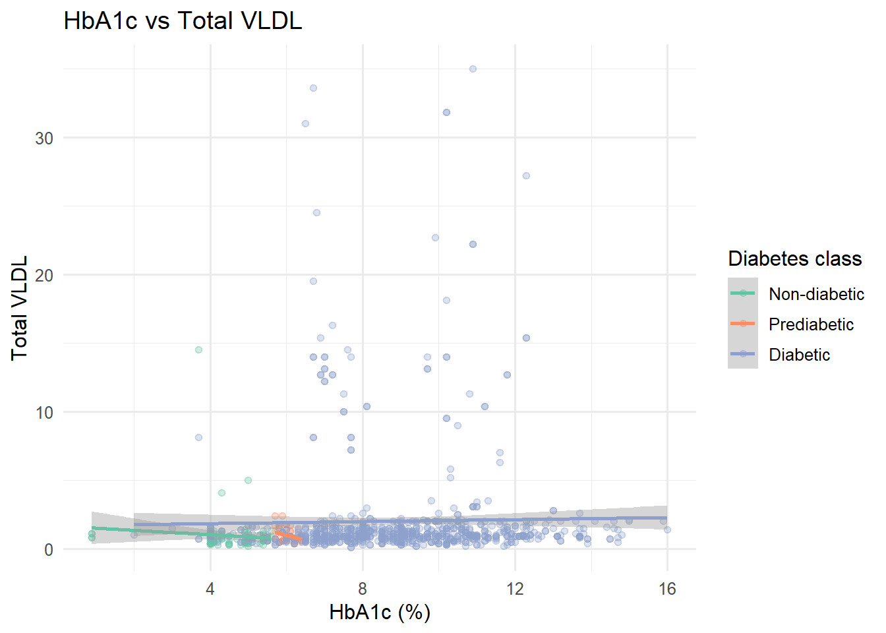
2.8 Combined Lipid Profile Visualization
To improve visualization and allow direct comparison among lipid biomarkers, individual scatterplots were combined into a single multi-panel figure.
library(ggpubr)
lipid_panel <- ggarrange(
chol_plot,
tg_plot,
hdl_plot,
ldl_plot,
vldl_plot,
ncol = 2,
nrow = 3,
labels = LETTERS[1:5]
)`geom_smooth()` using formula = 'y ~ x'
`geom_smooth()` using formula = 'y ~ x'
`geom_smooth()` using formula = 'y ~ x'
`geom_smooth()` using formula = 'y ~ x'
`geom_smooth()` using formula = 'y ~ x'lipid_panel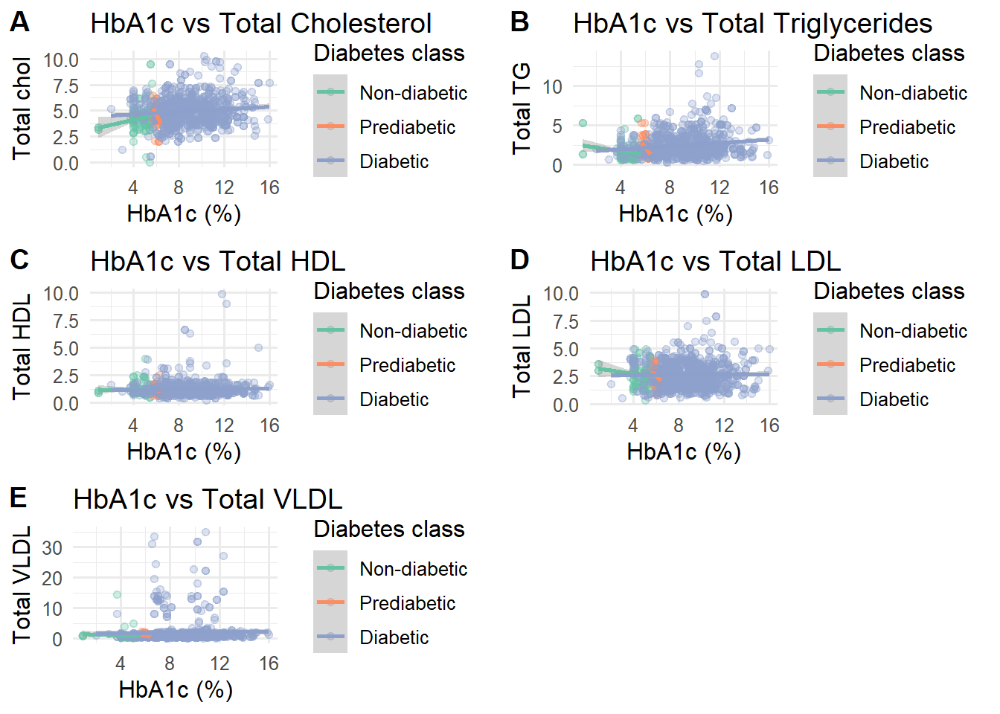
Figure 4. Association between HbA1c and lipid profile biomarkers.
2.9 Interpretation
The relationship between HbA1c and lipid biomarkers was evaluated based on correlation coefficients, scatterplot trends, and regression lines.
Possible interpretations include:
- A positive association between HbA1c and cholesterol, triglycerides, LDL, or VLDL would indicate that poorer glycemic control is associated with an unfavorable lipid profile.
- A negative association between HbA1c and HDL would suggest that worsening glycemic control is associated with reduced protective cholesterol levels.
- Weak or absent associations would suggest that additional factors may contribute to lipid variation among individuals with diabetes.
3 Research Question 3
3.1 Is HbA1c associated with kidney function?
Diabetic kidney disease is one of the most common complications of diabetes and is strongly influenced by prolonged exposure to elevated blood glucose levels. Chronic hyperglycemia can contribute to renal injury through oxidative stress, inflammation, and vascular dysfunction.
Serum urea and creatinine are commonly used biomarkers for evaluating kidney function. Therefore, this study examined whether HbA1c levels were associated with changes in kidney function markers.
3.2 Relationship Between HbA1c and Kidney Function Biomarkers
Scatterplots with linear regression lines were generated to evaluate the association between HbA1c and kidney function markers.
3.3 HbA1c and Urea
urea_plot <- ggplot(Diabetes, aes(x = HbA1c, y = Urea, color = Class_Label)) +
geom_point(alpha = 0.30, size = 1.5) +
geom_smooth(method = "lm", se = TRUE, linewidth = 1) +
scale_color_brewer(palette = "Set2") +
theme_minimal(base_size = 12) +
labs(
title = "HbA1c vs Total Urea",
x = "HbA1c (%)",
y = "Total Urea",
color = "Diabetes class"
)
urea_plot`geom_smooth()` using formula = 'y ~ x'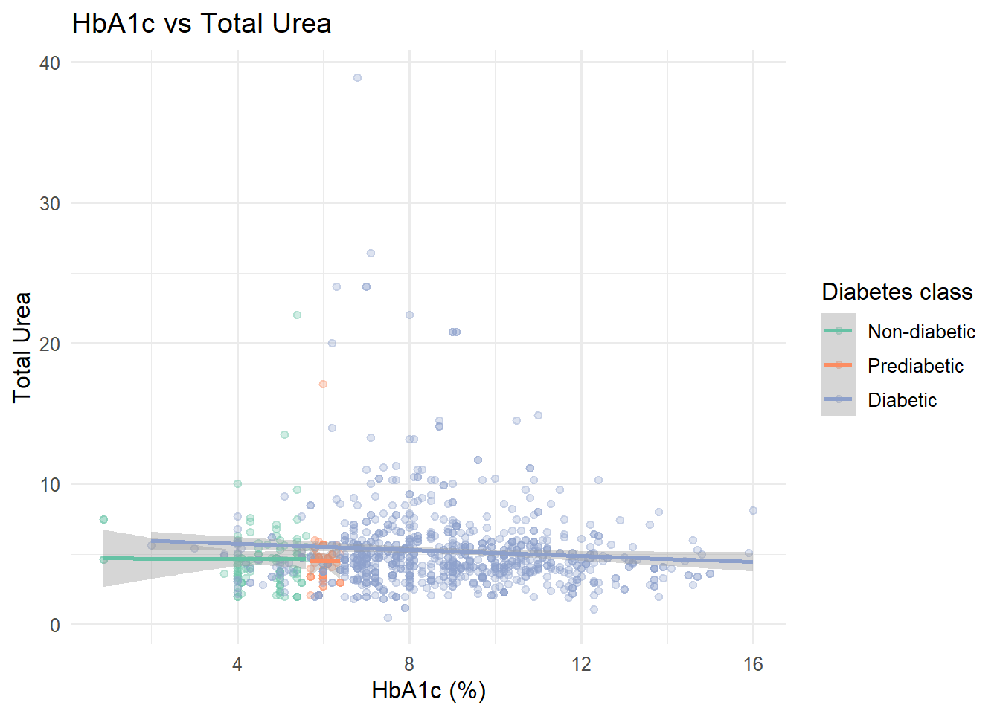
Figure 5A. Relationship between HbA1c and serum urea levels.
3.4 HbA1c and Creatinine
cr_plot <- ggplot(Diabetes, aes(x = HbA1c, y = Cr, color = Class_Label)) +
geom_point(alpha = 0.30, size = 1.5) +
geom_smooth(method = "lm", se = TRUE, linewidth = 1) +
scale_color_brewer(palette = "Set2") +
theme_minimal(base_size = 12) +
labs(
title = "HbA1c vs Total Cr",
x = "HbA1c (%)",
y = "Total Cr",
color = "Diabetes class"
)
cr_plot`geom_smooth()` using formula = 'y ~ x'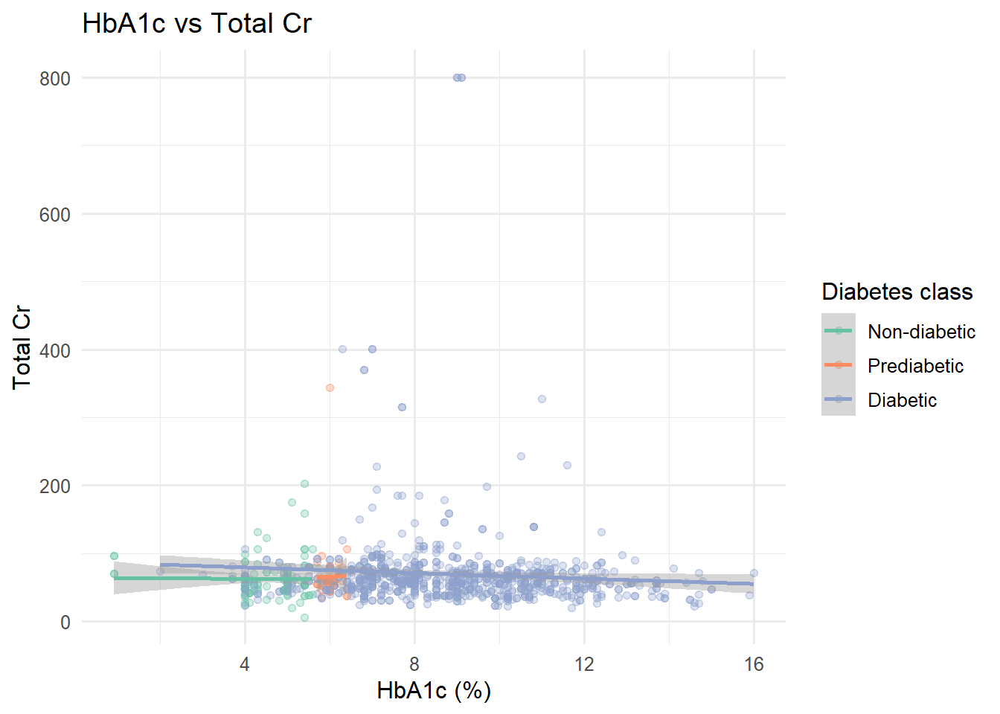
Figure 5B. Relationship between HbA1c and serum creatinine levels.
3.5 Combined Kidney Function Visualization
To improve comparison between renal biomarkers, both kidney function plots were displayed together.
ggarrange(
urea_plot,
cr_plot,
ncol = 2
)`geom_smooth()` using formula = 'y ~ x'
`geom_smooth()` using formula = 'y ~ x'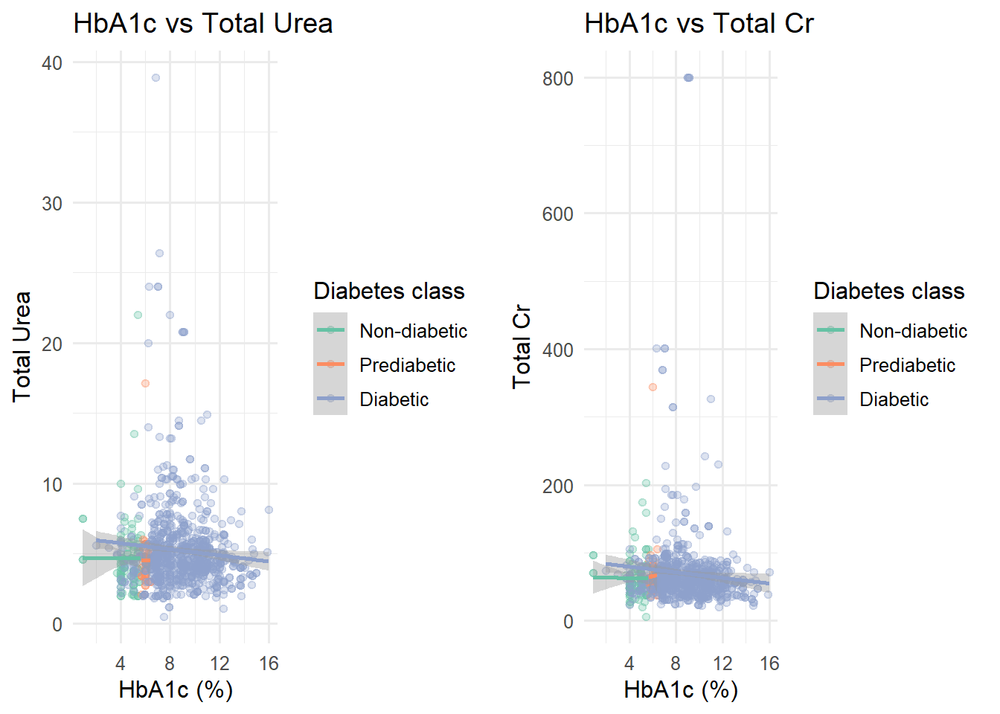
Figure 5. Association between HbA1c and kidney function biomarkers.
3.6 Interpretation
The relationship between HbA1c and kidney function markers was evaluated based on the direction and strength of the regression trends.
A positive association between HbA1c and urea or creatinine would suggest that worsening glycemic control is associated with poorer kidney function. This would support the hypothesis that chronic hyperglycemia contributes to renal impairment.
However, weak or non-significant associations would suggest that kidney function is influenced by additional factors beyond glycemic control, including disease duration, age, medications, hypertension, and other metabolic factors.
4 Research Question 4
4.1 Can lipid profile and kidney function biomarkers predict HbA1c levels?
While individual correlations describe relationships between HbA1c and individual biomarkers, diabetes-related metabolic abnormalities often occur together. Therefore, a multiple linear regression model was performed to determine whether lipid profile markers and kidney function biomarkers collectively predict HbA1c levels.
The model included:
- Total cholesterol (Chol)
- Triglycerides (TG)
- HDL
- LDL
- VLDL
- Urea
- Creatinine (Cr)
HbA1c was used as the dependent variable because it represents long-term glycemic control.
4.2 Multiple Linear Regression Model
The following model was used:
[ HbA1c = _0 + _1(Chol) + _2(TG) + _3(HDL) + _4(LDL) + _5(VLDL) + _6(Urea) + _7(Cr) ]
model <-
lm(
HbA1c ~ Chol +
TG +
HDL +
LDL +
VLDL +
Urea +
Cr,
data = Diabetes
)
library(broom)Warning: package 'broom' was built under R version 4.6.1library(ggplot2)
tidy(model,
conf.int=TRUE) |>
filter(term!="(Intercept)") |>
ggplot(
aes(
estimate,
reorder(term,estimate)
)
)+
geom_point(size=3)+
geom_errorbarh(
aes(
xmin=conf.low,
xmax=conf.high
),
height=.2
)+
geom_vline(
xintercept=0,
linetype=2
)+
theme_minimal()+
labs(
title="Regression Coefficients",
x="Estimate",
y=""
)Warning: `geom_errorbarh()` was deprecated in ggplot2 4.0.0.
ℹ Please use the `orientation` argument of `geom_errorbar()` instead.`height` was translated to `width`.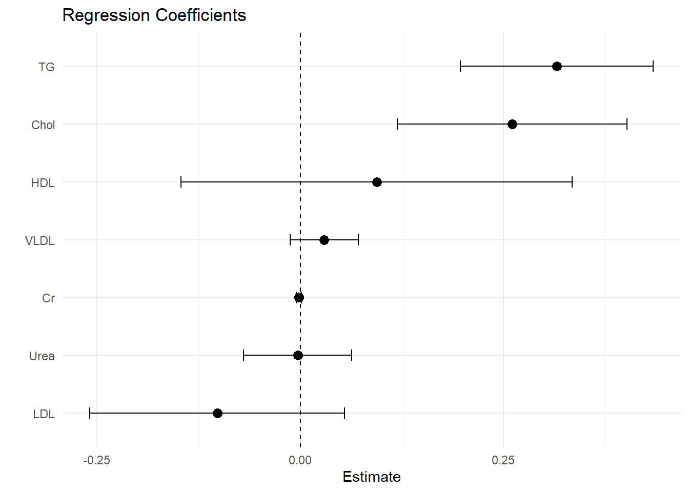
4.3 Regression Model Interpretation
The regression output provides several important measures:
4.3.1 Model Fit
The R-squared (R²) value represents the proportion of variation in HbA1c explained by the combined lipid and kidney biomarkers.
A higher R² value indicates that the included biomarkers explain a greater proportion of differences in glycemic control among individuals.
| ## Discussion This analysis examined how glycemic control, measured by HbA1c, relates to lipid profile and kidney function across diabetes classifications. As expected, HbA1c increased from non-diabetic to prediabetic to diabetic groups, confirming its role as a robust marker of worsening glycemic status. The correlation and regression results show that HbA1c is more strongly associated with lipid abnormalities than with the kidney function markers included in this dataset. |
| Total cholesterol and triglycerides emerged as significant predictors of HbA1c, suggesting that poorer glycemic control tends to co-occur with a more adverse lipid profile. This is consistent with the concept of diabetic dyslipidemia, in which chronic hyperglycemia and insulin resistance drive atherogenic changes in lipid metabolism and increase cardiovascular risk. In contrast, urea and creatinine showed weaker and non-significant independent associations with HbA1c, indicating that these routine renal markers may not closely track glycemic status in this cross-sectional dataset. Kidney involvement in diabetes may require more sensitive measures or additional clinical information, such as eGFR, albuminuria, disease duration, and comorbid conditions, to be fully characterized. |
| ## Conclusion In summary, this study shows that HbA1c differs clearly across diabetes classifications and is more closely linked to lipid abnormalities than to the kidney function markers evaluated. Higher HbA1c is associated with an unfavorable lipid profile, particularly elevated cholesterol and triglycerides, highlighting the importance of assessing both glycemic control and lipid status in individuals with diabetes. Routine measures of urea and creatinine, however, did not demonstrate strong independent relationships with HbA1c, suggesting that renal risk may not be captured adequately by these markers alone. These findings support an integrated metabolic approach to diabetes care that combines glycemic monitoring with detailed lipid assessment, while future work should incorporate more sensitive renal indices and broader clinical covariates to clarify the relationship between glycemic control and kidney disease. |
| ## References American Diabetes Association Professional Practice Committee. Standards of Care in Diabetes—2026. Diabetes Care. 2026;49(Suppl 1):S1–S200. |
| International Diabetes Federation. IDF Diabetes Atlas. 11th ed. Brussels: International Diabetes Federation; 2025. |
| Goldberg IJ. Diabetic dyslipidemia: causes and consequences. J Clin Endocrinol Metab. 2001;86(3):897–904. |
| Chahil TJ, Ginsberg HN. Diabetic dyslipidemia. Endocrinol Metab Clin North Am. 2006;35(3):491–510. |
| Vergès B. Pathophysiology of diabetic dyslipidaemia: where are we? Diabetologia. 2015;58(5):886–899. |
| Ali S, et al. Diabetic dyslipidemia: a screening tool for cardiovascular risk. J Family Med Prim Care. 2021;10(12):4431–4436. |
| Wan EYF, et al. Diabetes with poor-control HbA1c is cardiovascular disease risk equivalent: a population-based retrospective cohort study. BMJ Open Diabetes Res Care. 2023;11(1):e003124. |
| Butalia S, et al. Association between hemoglobin A1c and development of cardiovascular disease and mortality. Diabetes Care. 2024;47(5):e60–e68. |
| Romera IC, et al. The association between HbA1c levels and the risk of myocardial infarction and stroke in type 2 diabetes. Cardiovasc Diabetol. 2025;24(1):45. |
| Dabla PK. Renal function in diabetic nephropathy. World J Diabetes. 2010;1(2):48–56. |
| McGill JB, et al. Making an impact on kidney disease in people with type 2 diabetes. BMJ Open Diabetes Res Care. 2022;10(4):e002957. |
| Kidney Disease: Improving Global Outcomes (KDIGO) CKD Work Group. KDIGO 2024 Clinical Practice Guideline for the Evaluation and Management of Chronic Kidney Disease. Kidney Int Suppl. 2024;14(1):1–115. |
| American Academy of Family Physicians. Diabetic kidney disease: diagnosis, treatment, and prevention. Am Fam Physician. 2019;99(12):751–759. |
| Tsimihodimos V, et al. Dyslipidemia in type 2 diabetes: pathophysiology and management. Curr Pharm Des. 2018;24(29):3650–3662. |
Last updated: June 2026